Chapter 6: Modeling Discontinuous and Nonlinear Change
Source:vignettes/articles/chapter-6.Rmd
chapter-6.Rmd
library(alda)
library(dplyr)
library(tidyr)
library(purrr)
library(stringr)
library(ggplot2)
library(scales)
library(nlme)
library(lme4)
library(broom.mixed)
library(modelbased)
library(modelsummary)
library(gt)6.1 Discontinuous Individual Change
In Section 6.1, Singer and Willett (2003) discuss strategies for fitting discontinuous individual change trajectories using a subset of data from the National Longitudinal Study of Youth tracking the labour market experiences of male high school dropouts (Murnane, Boudett, & Willett, 1999).
For this example we return to the dropout_wages data set
introduced in Chapter 5, a person-period data frame with 6402 rows and 9
columns:
-
id: Participant ID. -
log_wages: Natural logarithm of wages. -
experience: Labour force experience in years, tracked from dropouts’ first day of work. -
ged: Binary indicator for whether the dropout obtained a GED. -
postsecondary_education: Binary indicator for whether the dropout obtained post-secondary education. -
black: Binary indicator for whether the dropout is black. -
hispanic: Binary indicator for whether the dropout is hispanic. -
highest_grade: Highest grade completed. -
unemployment_rate: Unemployment rate in the local geographic area.
dropout_wages
#> # A tibble: 6,402 × 9
#> id log_wages experience ged postsecondary_education black hispanic
#> <fct> <dbl> <dbl> <dbl> <dbl> <dbl> <dbl>
#> 1 31 1.49 0.015 1 0.015 0 1
#> 2 31 1.43 0.715 1 0.715 0 1
#> 3 31 1.47 1.73 1 1.73 0 1
#> 4 31 1.75 2.77 1 2.77 0 1
#> 5 31 1.93 3.93 1 3.93 0 1
#> 6 31 1.71 4.95 1 4.95 0 1
#> 7 31 2.09 5.96 1 5.96 0 1
#> 8 31 2.13 6.98 1 6.98 0 1
#> 9 36 1.98 0.315 1 0.315 0 0
#> 10 36 1.80 0.983 1 0.983 0 0
#> # ℹ 6,392 more rows
#> # ℹ 2 more variables: highest_grade <dbl>, unemployment_rate <dbl>As we demonstrated in Section 5.3, the inclusion of one (or more)
time-varying predictor(s) in your level-1 individual growth model can be
used to model discontinuous individual change trajectories. As Singer
and Willett (2003) discuss, the dropout_wages data contains
several time-varying predictors that can be used to model different
forms of discontinuous change. We can see the behaviour of each of these
predictors by examining the data from a subset of individuals:
-
ged: An immediate shift in elevation, but no shift in slope. -
postsecondary_education: An immediate shift in slope, but no shift in elevation. -
ged_x_experience: Immediate shifts in both elevation and slope.
# Table 6.1, page 192:
dropout_wages |>
filter(id %in% c(206, 2365, 4384)) |>
select(id, log_wages, experience, ged, postsecondary_education) |>
mutate(ged_x_experience = ged * experience) |>
print(n = 22)
#> # A tibble: 22 × 6
#> id log_wages experience ged postsecondary_education ged_x_experience
#> <fct> <dbl> <dbl> <dbl> <dbl> <dbl>
#> 1 206 2.03 1.87 0 0 0
#> 2 206 2.30 2.81 0 0 0
#> 3 206 2.48 4.31 0 0 0
#> 4 2365 1.78 0.66 0 0 0
#> 5 2365 1.76 1.68 0 0 0
#> 6 2365 1.71 2.74 0 0 0
#> 7 2365 1.74 3.68 0 0 0
#> 8 2365 2.19 4.68 1 0 4.68
#> 9 2365 2.04 5.72 1 1.04 5.72
#> 10 2365 2.32 6.72 1 2.04 6.72
#> 11 2365 2.66 7.87 1 3.19 7.87
#> 12 2365 2.42 9.08 1 4.40 9.08
#> 13 2365 2.39 10.0 1 5.36 10.0
#> 14 2365 2.48 11.1 1 6.44 11.1
#> 15 2365 2.44 12.0 1 7.36 12.0
#> 16 4384 2.86 0.096 0 0 0
#> 17 4384 1.53 1.04 0 0 0
#> 18 4384 1.59 1.73 1 0 1.73
#> 19 4384 1.97 3.13 1 1.40 3.13
#> 20 4384 1.68 4.28 1 2.56 4.28
#> 21 4384 2.62 5.72 1 4.00 5.72
#> 22 4384 2.58 6.02 1 4.30 6.02Here we will fit ten models to the dropout_wages
data:
- Model A: A baseline model.
- Model B: A model that adds a discontinuity in elevation, but not
slope, by including fixed and random effects for
ged. - Model C: A model that excludes the variance/covariance components
associated with
gedin Model B. - Model D: A model that adds a discontinuity in slope, but not
elevation, by including fixed and random effects for
postsecondary_education. - Model E: A model that excludes the variance/covariance components
associated with
postsecondary_educationin Model D. - Model F: A model that adds a discontinuity in elevation and slope by
including fixed and random effects for
gedandpostsecondary_education. - Model G: A model that excludes the variance/covariance components
associated with
postsecondary_educationin Model F. - Model H: A model that excludes the variance/covariance components
associated with
gedin Model F. - Model I: A model that adds a discontinuity in elevation and slope by
including fixed and random effects for
gedand the interaction betweengedandexperience. - Model J: A model that excludes the variance/covariance components
associated with the interaction between
gedandexperiencein Model I.
# Fit models ------------------------------------------------------------------
dropout_wages_fit_A <- lmer(
log_wages ~
experience +
I(highest_grade - 9) +
experience:black +
I(unemployment_rate - 7) +
(1 + experience | id),
data = dropout_wages,
REML = FALSE
)
dropout_wages_fit_B <- update(
dropout_wages_fit_A,
. ~ . - (1 + experience | id) + ged + (1 + experience + ged | id),
control = lmerControl(optimizer = "bobyqa")
)
dropout_wages_fit_C <- update(
dropout_wages_fit_A,
. ~ . + ged,
control = lmerControl(optimizer = "bobyqa")
)
dropout_wages_fit_D <- update(
dropout_wages_fit_A,
. ~ .
- (1 + experience | id)
+ postsecondary_education
+ (1 + experience + postsecondary_education | id),
control = lmerControl(optimizer = "bobyqa")
)
dropout_wages_fit_E <- update(
dropout_wages_fit_A,
. ~ . + postsecondary_education
)
dropout_wages_fit_F <- update(
dropout_wages_fit_A,
. ~ .
- (1 + experience | id)
+ ged
+ postsecondary_education
+ (1 + experience + ged + postsecondary_education | id),
control = lmerControl(optimizer = "bobyqa")
)
dropout_wages_fit_G <- update(
dropout_wages_fit_F,
. ~ .
- (1 + experience + ged + postsecondary_education | id)
+ (1 + experience + ged | id)
)
dropout_wages_fit_H <- update(
dropout_wages_fit_F,
. ~ .
- (1 + experience + ged + postsecondary_education | id)
+ (1 + experience + postsecondary_education | id)
)
dropout_wages_fit_I <- update(
dropout_wages_fit_A,
. ~ .
- (1 + experience | id)
+ ged
+ experience:ged
+ (1 + experience + ged + experience:ged | id)
)
dropout_wages_fit_J <- update(
dropout_wages_fit_I,
. ~ .
- (1 + experience + ged + experience:ged | id)
+ (1 + experience + ged | id)
)
dropout_wages_fits <- list(
`Model A` = dropout_wages_fit_A,
`Model B` = dropout_wages_fit_B,
`Model C` = dropout_wages_fit_C,
`Model D` = dropout_wages_fit_D,
`Model E` = dropout_wages_fit_E,
`Model F` = dropout_wages_fit_F,
`Model G` = dropout_wages_fit_G,
`Model H` = dropout_wages_fit_H,
`Model I` = dropout_wages_fit_I,
`Model J` = dropout_wages_fit_J
)
# Make table ------------------------------------------------------------------
options(modelsummary_get = "all")
dropout_wages_fits |>
modelsummary(
shape = term + effect + statistic ~ model,
scales = c("vcov", NA),
coef_map = c(
"(Intercept)",
"I(highest_grade - 9)",
"I(unemployment_rate - 7)",
"black",
"experience",
"experience:I(highest_grade - 9)",
"experience:black",
"ged",
"postsecondary_education",
"experience:ged",
"var__Observation",
"var__(Intercept)",
"var__experience",
"var__ged",
"var__postsecondary_education",
"var__experience:ged"
),
gof_map = tibble(
raw = c("deviance", "AIC", "BIC"),
clean = c("Deviance", "AIC", "BIC"),
fmt = 1
),
output = "gt"
) |>
tab_row_group(label = "Goodness-of-Fit", rows = 23:25) |>
tab_row_group(label = "Variance Components", rows = 17:22) |>
tab_row_group(label = "Fixed Effects", rows = 1:16) |>
cols_hide(effect)| Model A | Model B | Model C | Model D | Model E | Model F | Model G | Model H | Model I | Model J | |
|---|---|---|---|---|---|---|---|---|---|---|
| Fixed Effects | ||||||||||
| (Intercept) | 1.749 | 1.734 | 1.734 | 1.749 | 1.750 | 1.739 | 1.739 | 1.739 | 1.738 | 1.738 |
| (0.011) | (0.012) | (0.012) | (0.011) | (0.011) | (0.012) | (0.012) | (0.012) | (0.012) | (0.012) | |
| I(highest_grade - 9) | 0.040 | 0.038 | 0.039 | 0.040 | 0.040 | 0.039 | 0.038 | 0.039 | 0.038 | 0.038 |
| (0.006) | (0.006) | (0.006) | (0.006) | (0.006) | (0.006) | (0.006) | (0.006) | (0.006) | (0.006) | |
| I(unemployment_rate - 7) | -0.012 | -0.012 | -0.012 | -0.012 | -0.012 | -0.012 | -0.012 | -0.012 | -0.012 | -0.012 |
| (0.002) | (0.002) | (0.002) | (0.002) | (0.002) | (0.002) | (0.002) | (0.002) | (0.002) | (0.002) | |
| experience | 0.044 | 0.043 | 0.043 | 0.041 | 0.041 | 0.041 | 0.041 | 0.041 | 0.042 | 0.042 |
| (0.003) | (0.003) | (0.003) | (0.003) | (0.003) | (0.003) | (0.003) | (0.003) | (0.003) | (0.003) | |
| experience:black | -0.018 | -0.018 | -0.019 | -0.019 | -0.019 | -0.020 | -0.019 | -0.019 | -0.019 | -0.018 |
| (0.004) | (0.004) | (0.004) | (0.004) | (0.004) | (0.004) | (0.004) | (0.004) | (0.004) | (0.004) | |
| ged | 0.061 | 0.059 | 0.041 | 0.043 | 0.043 | 0.046 | 0.046 | |||
| (0.018) | (0.017) | (0.022) | (0.021) | (0.019) | (0.026) | (0.025) | ||||
| postsecondary_education | 0.015 | 0.014 | 0.009 | 0.009 | 0.009 | |||||
| (0.005) | (0.004) | (0.006) | (0.005) | (0.005) | ||||||
| experience:ged | 0.005 | 0.005 | ||||||||
| (0.005) | (0.005) | |||||||||
| Variance Components | ||||||||||
| var__Observation | 0.095 | 0.094 | 0.095 | 0.095 | 0.095 | 0.094 | 0.094 | 0.095 | 0.094 | 0.094 |
| var__(Intercept) | 0.051 | 0.044 | 0.051 | 0.051 | 0.051 | 0.041 | 0.043 | 0.050 | 0.041 | 0.044 |
| var__experience | 0.002 | 0.002 | 0.002 | 0.001 | 0.002 | 0.001 | 0.002 | 0.001 | 0.001 | 0.002 |
| var__ged | 0.028 | 0.016 | 0.028 | 0.063 | 0.030 | |||||
| var__postsecondary_education | 0.001 | 0.003 | 0.001 | |||||||
| var__experience:ged | 0.002 | |||||||||
| Goodness-of-Fit | ||||||||||
| Deviance | 4830.5 | 4805.5 | 4818.3 | 4817.4 | 4820.7 | 4789.4 | 4802.7 | 4812.6 | 4793.5 | 4804.6 |
| AIC | 4848.5 | 4831.5 | 4838.3 | 4843.4 | 4840.7 | 4825.4 | 4830.7 | 4840.6 | 4829.5 | 4832.6 |
| BIC | 4909.4 | 4919.5 | 4906.0 | 4931.3 | 4908.4 | 4947.1 | 4925.4 | 4935.3 | 4951.3 | 4927.3 |
We can visualize the different forms of discontinuous change hypothesized by these models by plotting the fitted change trajectory for a single prototypical individual.
prototypical_dropout_wages <- dropout_wages_fits |>
keep_at(paste0("Model ", c("B", "D", "F", "I"))) |>
map(
\(.fit) {
prototypical_dropout <- tibble(
experience = c(0, 3, 3, 10),
ged = c(0, 0, 1, 1),
postsecondary_education = c(0, 0, 0, 7),
highest_grade = 9,
black = 1,
unemployment_rate = 7,
cid = c(1, 1, 2, 2)
)
prototypical_dropout |>
mutate(log_wages = predict(.fit, prototypical_dropout, re.form = NA))
}
) |>
list_rbind(names_to = "model")
# Similar to Figure 6.2:
ggplot(prototypical_dropout_wages, aes(x = experience, y = log_wages)) +
geom_line(aes(group = cid)) +
geom_line(aes(group = experience), alpha = .25) +
facet_wrap(vars(model))
We can select a “final” model from our taxonomy of models by comparing deviance statistics between nested models, and AIC/BIC statistics between non-nested models (in addition to using a combination of logic, theory, and prior research).
dropout_wages_anovas <- list(
"Model B" = anova(dropout_wages_fit_B, dropout_wages_fit_A),
"Model C" = anova(dropout_wages_fit_C, dropout_wages_fit_B),
"Model D" = anova(dropout_wages_fit_D, dropout_wages_fit_A),
"Model E" = anova(dropout_wages_fit_E, dropout_wages_fit_D),
"Model F" = anova(dropout_wages_fit_F, dropout_wages_fit_B),
"Model F" = anova(dropout_wages_fit_F, dropout_wages_fit_D),
"Model G" = anova(dropout_wages_fit_G, dropout_wages_fit_F),
"Model H" = anova(dropout_wages_fit_H, dropout_wages_fit_F),
"Model I" = anova(dropout_wages_fit_I, dropout_wages_fit_B),
"Model J" = anova(dropout_wages_fit_J, dropout_wages_fit_I)
)
# Table 6.2, page 203:
dropout_wages_anovas |>
map(tidy) |>
list_rbind(names_to = "model") |>
select(model, term, npar, deviance, statistic, df, p.value) |>
mutate(
term = str_remove(term, "dropout_wages_fit_"),
across(c(npar, df), as.integer)
) |>
group_by(model) |>
gt() |>
cols_label(term = "comparison") |>
fmt_number(columns = where(is.double), decimals = 2) |>
sub_missing(missing_text = "")| comparison | npar | deviance | statistic | df | p.value |
|---|---|---|---|---|---|
| Model B | |||||
| A | 9 | 4,830.52 | |||
| B | 13 | 4,805.52 | 25.00 | 4 | 0.00 |
| Model C | |||||
| C | 10 | 4,818.32 | |||
| B | 13 | 4,805.52 | 12.81 | 3 | 0.01 |
| Model D | |||||
| A | 9 | 4,830.52 | |||
| D | 13 | 4,817.38 | 13.14 | 4 | 0.01 |
| Model E | |||||
| E | 10 | 4,820.71 | |||
| D | 13 | 4,817.38 | 3.33 | 3 | 0.34 |
| Model F | |||||
| B | 13 | 4,805.52 | |||
| F | 18 | 4,789.35 | 16.16 | 5 | 0.01 |
| D | 13 | 4,817.38 | |||
| F | 18 | 4,789.35 | 28.02 | 5 | 0.00 |
| Model G | |||||
| G | 14 | 4,802.69 | |||
| F | 18 | 4,789.35 | 13.33 | 4 | 0.01 |
| Model H | |||||
| H | 14 | 4,812.64 | |||
| F | 18 | 4,789.35 | 23.29 | 4 | 0.00 |
| Model I | |||||
| B | 13 | 4,805.52 | |||
| I | 18 | 4,793.51 | 12.01 | 5 | 0.03 |
| Model J | |||||
| J | 14 | 4,804.60 | |||
| I | 18 | 4,793.51 | 11.09 | 4 | 0.03 |
Following Singer and Willett (2003), here we choose Model F as our “final” model.
# Table 6.3, page 205:
dropout_wages_fit_F |>
list() |>
set_names("Estimate") |>
modelsummary(
shape = term + effect + statistic ~ model,
scales = c("vcov", NA),
coef_map = c(
"(Intercept)",
"I(highest_grade - 9)",
"I(unemployment_rate - 7)",
"experience",
"experience:black",
"ged",
"postsecondary_education",
"var__Observation",
"var__(Intercept)",
"var__experience",
"var__ged",
"var__postsecondary_education"
),
gof_map = tibble(
raw = c("deviance", "AIC", "BIC"),
clean = c("Deviance", "AIC", "BIC"),
fmt = 1
),
output = "gt"
) |>
tab_row_group(label = "Goodness-of-Fit", rows = 20:22) |>
tab_row_group(label = "Variance Components", rows = 15:19) |>
tab_row_group(label = "Fixed Effects", rows = 1:14) |>
cols_hide(effect)| Estimate | |
|---|---|
| Fixed Effects | |
| (Intercept) | 1.739 |
| (0.012) | |
| I(highest_grade - 9) | 0.039 |
| (0.006) | |
| I(unemployment_rate - 7) | -0.012 |
| (0.002) | |
| experience | 0.041 |
| (0.003) | |
| experience:black | -0.020 |
| (0.004) | |
| ged | 0.041 |
| (0.022) | |
| postsecondary_education | 0.009 |
| (0.006) | |
| Variance Components | |
| var__Observation | 0.094 |
| var__(Intercept) | 0.041 |
| var__experience | 0.001 |
| var__ged | 0.016 |
| var__postsecondary_education | 0.003 |
| Goodness-of-Fit | |
| Deviance | 4789.4 |
| AIC | 4825.4 |
| BIC | 4947.1 |
Finally, we can plot prototypical change trajectories for the model.
Note the additional information captured by these discontinuous
trajectories compared to the continuous trajectories for the
dropout_wages data presented in Chapter 5 (Figure 5.2).
prototypical_dropout_wages_F <- dropout_wages_fit_F |>
estimate_prediction(
data = tibble(
experience = rep(c(0, 3, 3, 10), times = 4),
highest_grade = rep(c(9, 12), each = 4, times = 2),
black = rep(c(FALSE, TRUE), each = 8),
ged = rep(c(0, 0, 1, 1), times = 4),
unemployment_rate = 7,
postsecondary_education = rep(c(0, 0, 0, 7), times = 4)
)
) |>
rename(log_wages = Predicted) |>
mutate(
highest_grade = factor(highest_grade),
black = as.logical(black),
cid = consecutive_id(ged)
)
# Figure 6.3:
ggplot(prototypical_dropout_wages_F, aes(x = experience, y = log_wages)) +
geom_line(aes(group = cid, colour = black)) +
geom_line(
aes(group = interaction(experience, black), colour = black),
alpha = .25
) +
scale_x_continuous(breaks = seq(0, 10, by = 2)) +
scale_color_brewer(palette = "Dark2") +
coord_cartesian(xlim = c(0, 10), ylim = c(1.6, 2.4)) +
facet_wrap(vars(highest_grade), labeller = label_both)
6.2 Using Transformations to Model Nonlinear Individual Change
In Section 6.2, Singer and Willett (2003) discuss strategies for transforming outcome and time-indicator variables to model nonlinear individual change trajectories using a subset of data from Curran, Stice, and Chassin (1997), who measured the relation between changes in alcohol use and changes in peer alcohol use over a 3-year period in a community-based sample of Hispanic and Caucasian adolescents.
For this example we return to the alcohol_use_1 data set
introduced in Chapter 4, a person-period data frame with 246 rows and 6
columns:
-
id: Adolescent ID. -
age: Age in years at time of measurement. -
child_of_alcoholic: Binary indicator for whether the adolescent is a child of an alcoholic parent. -
male: Binary indicator for whether the adolescent is a male. -
alcohol_use: Square root of the summed scores of four eight-point items measuring frequency of alcohol use. -
peer_alcohol_use: Square root of the summed scores of two six-point items measuring frequency of peer alcohol use.
alcohol_use_1
#> # A tibble: 246 × 6
#> id age child_of_alcoholic male alcohol_use peer_alcohol_use
#> <fct> <dbl> <dbl> <dbl> <dbl> <dbl>
#> 1 1 14 1 0 1.73 1.26
#> 2 1 15 1 0 2 1.26
#> 3 1 16 1 0 2 1.26
#> 4 2 14 1 1 0 0.894
#> 5 2 15 1 1 0 0.894
#> 6 2 16 1 1 1 0.894
#> 7 3 14 1 1 1 0.894
#> 8 3 15 1 1 2 0.894
#> 9 3 16 1 1 3.32 0.894
#> 10 4 14 1 1 0 1.79
#> # ℹ 236 more rowsNote that the outcome variable, alcohol_use, uses a
square root metric—meaning that a square root
transformation was previously applied to the raw scores. To
return the alcohol_use scores to their original metric, we
can back-transform them by applying the inverse of the
transformation. In this case, by squaring the square root transformed
values.
alcohol_use_1 <- alcohol_use_1 |>
mutate(alcohol_use_raw = alcohol_use^2, .before = alcohol_use) |>
rename(alcohol_use_sqrt = alcohol_use)
alcohol_use_1
#> # A tibble: 246 × 7
#> id age child_of_alcoholic male alcohol_use_raw alcohol_use_sqrt
#> <fct> <dbl> <dbl> <dbl> <dbl> <dbl>
#> 1 1 14 1 0 3.00 1.73
#> 2 1 15 1 0 4 2
#> 3 1 16 1 0 4 2
#> 4 2 14 1 1 0 0
#> 5 2 15 1 1 0 0
#> 6 2 16 1 1 1 1
#> 7 3 14 1 1 1 1
#> 8 3 15 1 1 4 2
#> 9 3 16 1 1 11.0 3.32
#> 10 4 14 1 1 0 0
#> # ℹ 236 more rows
#> # ℹ 1 more variable: peer_alcohol_use <dbl>The difference between the original and transformed metrics is best seen by examining empirical growth plots for a random subset of individuals.
Notice that in the original metric—despite only having three measurement occasions—the individual change trajectories for participants 13, 20, 22, and 45 appear obviously nonlinear.
alcohol_use_1_empgrowth <- map(
list(original = "alcohol_use_raw", sqrt = "alcohol_use_sqrt"),
\(.y) {
set.seed(333)
alcohol_use_1 |>
filter(id %in% sample(id, size = 8)) |>
ggplot(aes(x = age, y = .data[[.y]])) +
geom_point() +
coord_cartesian(xlim = c(13, 17), ylim = c(-1, 15)) +
facet_wrap(vars(id), ncol = 4, labeller = label_both)
}
)
alcohol_use_1_empgrowth$original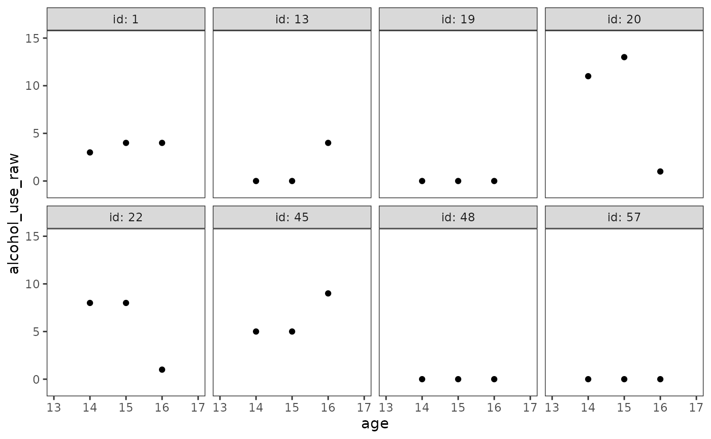
However, in the square root metric these same trajectories become more obviously linear.
alcohol_use_1_empgrowth$sqrt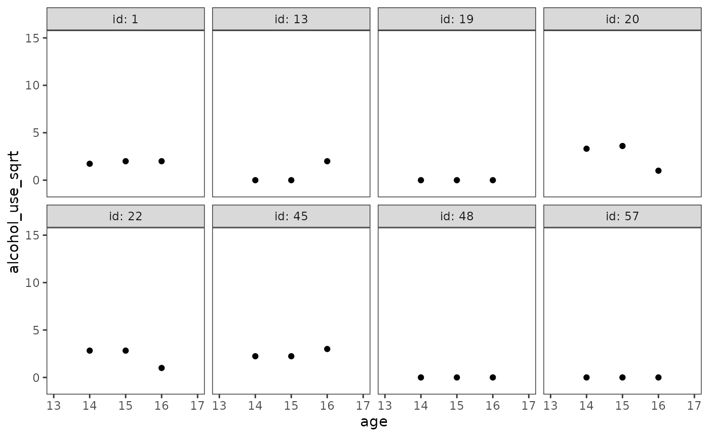
As Singer and Willett (2003) discuss, the ability to transform the outcome variable (or time-indicator variables) so that individual change becomes linear suggests a simple strategy for modelling nonlinear change:
- Transform the outcome variable (or time-indicator variables) so that individual change becomes linear.
- Fit the multilevel model for change in the transformed metric.
- Back-transform estimates and predictions to present findings in the original metric.
We return to Model E from Chapter 4 to demonstrate this strategy. As we did in Chapter 4, we begin by fitting the multilevel model for change in the transformed metric.
alcohol_use_1_fit <- lmer(
alcohol_use_sqrt ~
I(age - 14) * peer_alcohol_use + child_of_alcoholic + (1 + I(age - 14) | id),
data = alcohol_use_1,
REML = FALSE
)
summary(alcohol_use_1_fit)
#> Linear mixed model fit by maximum likelihood ['lmerMod']
#> Formula:
#> alcohol_use_sqrt ~ I(age - 14) * peer_alcohol_use + child_of_alcoholic +
#> (1 + I(age - 14) | id)
#> Data: alcohol_use_1
#>
#> AIC BIC logLik deviance df.resid
#> 606.7 638.3 -294.4 588.7 237
#>
#> Scaled residuals:
#> Min 1Q Median 3Q Max
#> -2.59554 -0.40414 -0.08352 0.45550 2.29975
#>
#> Random effects:
#> Groups Name Variance Std.Dev. Corr
#> id (Intercept) 0.2409 0.4908
#> I(age - 14) 0.1392 0.3730 -0.03
#> Residual 0.3373 0.5808
#> Number of obs: 246, groups: id, 82
#>
#> Fixed effects:
#> Estimate Std. Error t value
#> (Intercept) -0.31382 0.14611 -2.148
#> I(age - 14) 0.42469 0.10559 4.022
#> peer_alcohol_use 0.69518 0.11126 6.249
#> child_of_alcoholic 0.57120 0.14623 3.906
#> I(age - 14):peer_alcohol_use -0.15138 0.08451 -1.791
#>
#> Correlation of Fixed Effects:
#> (Intr) I(g-14) pr_lc_ chld__
#> I(age - 14) -0.410
#> peer_lchl_s -0.709 0.351
#> chld_f_lchl -0.338 0.000 -0.146
#> I(-14):pr__ 0.334 -0.814 -0.431 0.000However, instead of plotting prototypical change trajectories in the
transformed metric, we now back-transform to present them in their
original metric. Note the similarities and differences between by these
nonlinear trajectories compared to the linear trajectories for the
alcohol_use_1 data presented in Chapter 4 (Figure 4.3).
prototypical_alcohol_use <- alcohol_use_1_fit |>
estimate_prediction(
data = crossing(
age = seq(14, 16, by = .25),
child_of_alcoholic = 0:1,
peer_alcohol_use = c(0.655, 1.381)
)
) |>
rename(alcohol_use = Predicted) |>
mutate(
alcohol_use = alcohol_use^2,
child_of_alcoholic = factor(child_of_alcoholic),
peer_alcohol_use = factor(peer_alcohol_use, labels = c("low", "high"))
)
# Figure 6.4, page 209:
ggplot(prototypical_alcohol_use, aes(x = age, y = alcohol_use)) +
geom_line(aes(linetype = child_of_alcoholic, colour = peer_alcohol_use)) +
scale_color_viridis_d(option = "G", begin = .4, end = .7) +
scale_x_continuous(breaks = 13:17) +
coord_cartesian(xlim = c(13, 17), ylim = c(0, 3))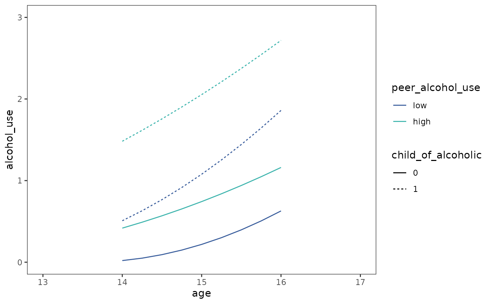
Selecting a suitable transformation
Singer and Willett (2003) suggest examining empirical growth plots for each participant (or a random subset) with several different transformations before selecting one for analysis, keeping in mind that:
- In order to analyze the data, the same transformation must be used for the entire sample.
- Different transformations may be more or less successful for different participants.
- The transformation selected for analysis should work well for most of the sample, but some compromise is expected.
We illustrate this process using the berkeley data set,
which contains a subset of data from the Berkeley Growth Study measuring
changes in IQ of a single girl followed from childhood into older
adulthood (Bayley, 1935).
berkeley
#> # A tibble: 18 × 2
#> age iq
#> <dbl> <dbl>
#> 1 5 37
#> 2 7 65
#> 3 9 85
#> 4 10 88
#> 5 11 95
#> 6 12 101
#> 7 13 103
#> 8 14 107
#> 9 15 113
#> 10 18 121
#> 11 21 148
#> 12 24 161
#> 13 27 165
#> 14 36 187
#> 15 42 205
#> 16 48 218
#> 17 54 218
#> 18 60 228Following Singer and Willett (2003), here we try transforming both
the outcome and time-indicator variable to see which is most successful
in removing nonlinearity. Note that although the two transformations in
this example are simply inversions of each other (raising
iq to the power of 2.3, and taking the 2.3th
root of age), they do not produce identical
reductions in nonlinearity.
berkeley_transforms <- list("original", "iq^(2.3)", "age^(1/2.3)") |>
set_names() |>
map(
\(.transform) {
mutate(
berkeley,
transform = .transform,
age = if_else(transform == "age^(1/2.3)", age^(1/2.3), age),
iq = if_else(transform == "iq^(2.3)", iq^(2.3), iq)
)
}
) |>
list_rbind(names_to = "metric") |>
mutate(metric = factor(metric, levels = unique(metric)))
# Figure 6.6, page 212:
ggplot(berkeley_transforms, aes(x = age, y = iq)) +
geom_point() +
facet_wrap(vars(metric), scales = "free", labeller = label_both)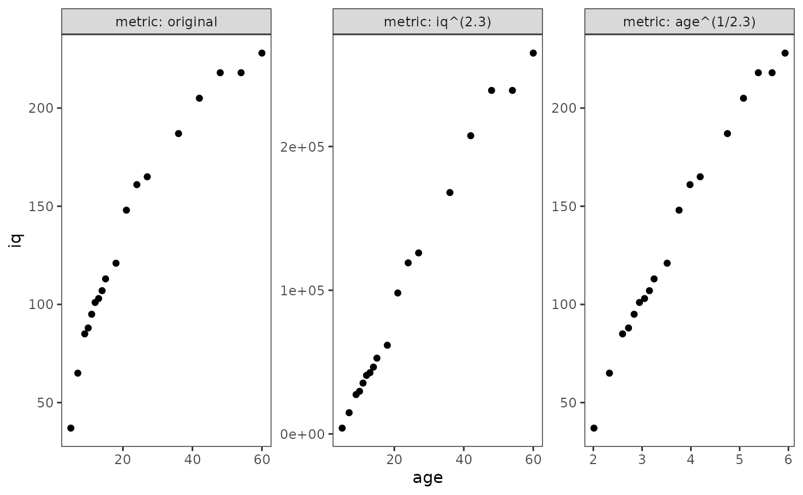
6.3 Representing individual change using a polynomial function of
time
In Section 6.3, Singer and Willett (2003) discuss strategies for fitting polynomial individual change trajectories using a subset of data from Keiley, Bates, Dodge, and Pettit (2000), who measured changes in externalizing behaviour in a sample of 45 children tracked from first through sixth grade.
For this example we use the externalizing_behaviour data
set, a person-period data frame with 270 rows and 5 columns:
-
id: Child ID. -
time: Time of measurement. -
externalizing_behaviour: Sum of scores on Achenbach’s (1991) Child Behavior Checklist. Scores range from 0 to 68 -
female: Binary indicator for whether the adolescent is a female. -
grade: Grade year.
externalizing_behaviour
#> # A tibble: 270 × 5
#> id externalizing_behaviour female time grade
#> <fct> <dbl> <dbl> <dbl> <dbl>
#> 1 1 50 0 0 1
#> 2 1 57 0 1 2
#> 3 1 51 0 2 3
#> 4 1 48 0 3 4
#> 5 1 43 0 4 5
#> 6 1 19 0 5 6
#> 7 2 4 0 0 1
#> 8 2 6 0 1 2
#> 9 2 3 0 2 3
#> 10 2 3 0 3 4
#> # ℹ 260 more rowsSinger and Willett (2003) recommend using two approaches for selecting among competing polynomial forms for the level-1 individual growth model:
- Examining empirical growth plots to identify the highest order polynomial change trajectory suggested by the data.
- Comparing goodness-of-fit statistics across a series of polynomial level-1 models.
Using a polynomial trajectory to summarize each person’s empirical growth record
We begin by examining empirical growth plots for a subset of children
whose trajectories span the wide array of individual change patterns in
the externalizing_behaviour data.
Unlike previous examples, here we (1) match the order of IDs in the
input vector to the order of ids in the resultant data
frame using the map() function from the
purrr package to filter the data in a specific order;
then (2) assign each participant in the subset a consecutive
alphabetical identifier using the consecutive_id() function
from the dplyr package.
# Note that participant 26 is last in the input vector and resultant data frame.
externalizing_behaviour_subset <- c(1, 6, 11, 25, 34, 36, 40, 26) |>
map(\(.id) filter(externalizing_behaviour, id == .id)) |>
list_rbind() |>
mutate(child = LETTERS[consecutive_id(id)])
tail(externalizing_behaviour_subset, n = 12)
#> # A tibble: 12 × 6
#> id externalizing_behaviour female time grade child
#> <fct> <dbl> <dbl> <dbl> <dbl> <chr>
#> 1 40 40 1 0 1 G
#> 2 40 23 1 1 2 G
#> 3 40 7 1 2 3 G
#> 4 40 28 1 3 4 G
#> 5 40 35 1 4 5 G
#> 6 40 56 1 5 6 G
#> 7 26 19 0 0 1 H
#> 8 26 32 0 1 2 H
#> 9 26 25 0 2 3 H
#> 10 26 40 0 3 4 H
#> 11 26 20 0 4 5 H
#> 12 26 23 0 5 6 HNow we can examine empirical growth plots for the
externalizing_behaviour_subset data.
externalizing_behaviour_empgrowth <- externalizing_behaviour_subset |>
ggplot(aes(x = grade, y = externalizing_behaviour)) +
geom_point() +
scale_x_continuous(breaks = 0:7) +
coord_cartesian(xlim = c(0, 7), ylim = c(0, 60)) +
facet_wrap(vars(child), ncol = 4, labeller = label_both)
externalizing_behaviour_empgrowth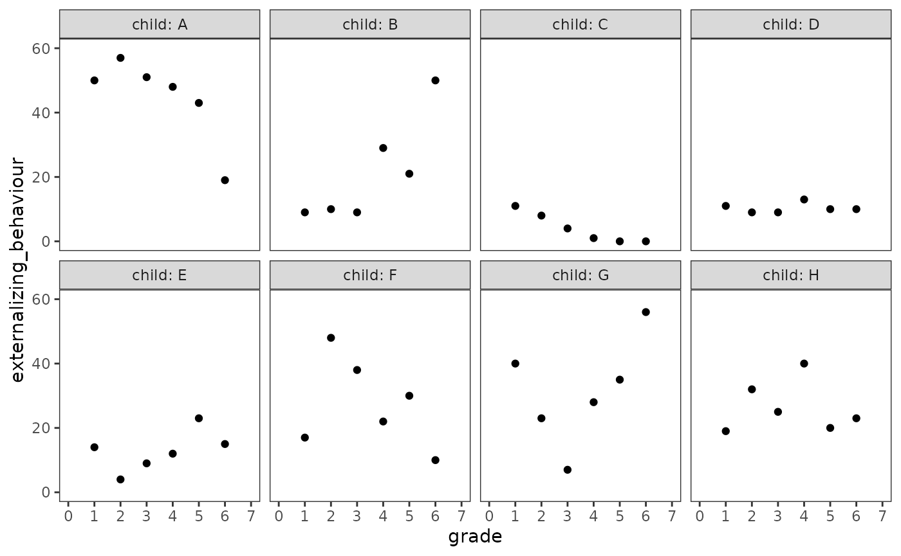
When faced with this many different individual change patterns, Singer and Willett (2003) suggest beginning with the following exploratory approach:
- First, identify the highest order polynomial needed to summarize change for each participant by fitting separate person-specific polynomial trajectories.
- Second, identify the highest order polynomial needed to summarize change for any participant by fitting a common polynomial trajectory across all participants.
Similar to previous examples, the geom_smooth() function
with the "lm" method can be used to add each person’s
fitted polynomial trajectory to the empirical growth record plot—all we
need to do is specify the functional form of the trajectories with the
formula argument. There are two ways to specify polynomial
trajectories using R’s formula syntax:
-
I(): TheI()function can be used to construct a series of polynomial predictors by hand. -
poly(): Thepoly()function can be used to construct a series of (by default, orthogonal) polynomial predictors from degree 1 up to a specifieddegree.
We begin with the person-specific polynomial trajectories. Note that
because there are no aesthetic mappings for geom_smooth()
formulas that can be used to specify the degree of each child’s
polynomial trajectory, we instead need to add a separate smooth geom to
the empirical growth plots for each child’s data.
externalizing_behaviour_empgrowth <- externalizing_behaviour_empgrowth +
map2(
group_split(externalizing_behaviour_subset, child),
list(2, 2, 1, 1, 3, 4, 2, 4),
\(.child, .degree) {
geom_smooth(
aes(linetype = polynomial, colour = degree),
data = mutate(
.child,
polynomial = factor("person-specific"),
degree = factor(.degree, levels = 1:4)
),
method = "lm",
formula = y ~ poly(x, degree = .degree),
se = FALSE
)
}
) +
scale_colour_brewer(palette = "Dark2", drop = FALSE) +
guides(linetype = guide_legend(override.aes = list(colour = "black")))
externalizing_behaviour_empgrowth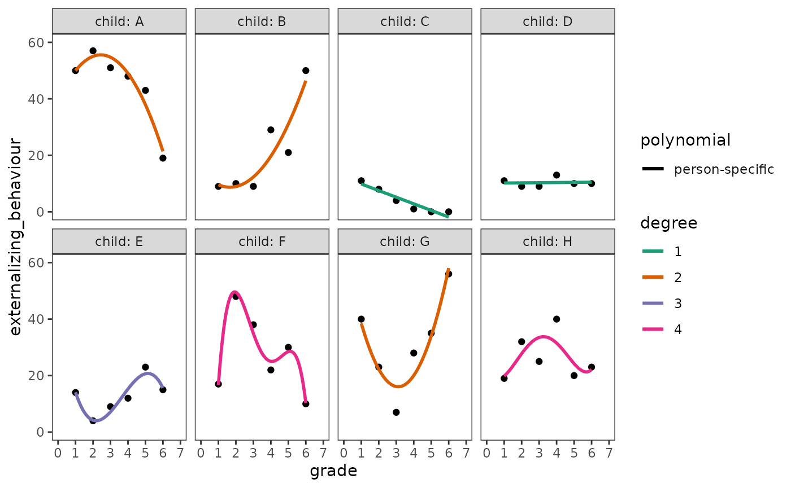
Next the common polynomial trajectories. Following Singer and Willett (2003), here we select a quartic (degree 4) trajectory because no child appears to need a higher order polynomial.
# Figure 6.7, page 218:
externalizing_behaviour_empgrowth +
geom_smooth(
aes(linetype = "common (quartic)"),
method = "lm",
formula = y ~ poly(x, degree = 4),
se = FALSE,
colour = "black",
linewidth = .5
)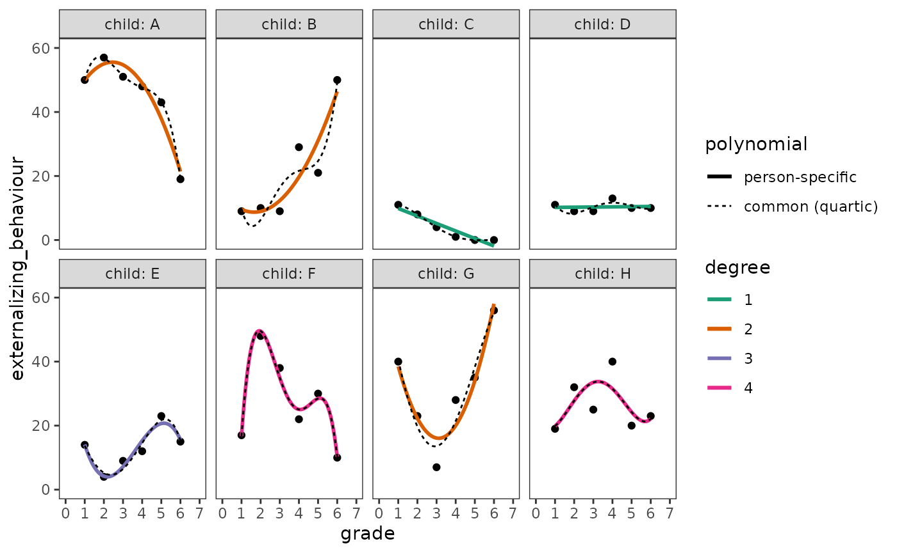
Testing Higher Order Terms in a Polynomial Level-1 Model
To select a “final” polynomial trajectory, Singer and Willett (2003) suggest fitting a series of level-1 individual growth models of increasing polynomial complexity, stopping when goodness-of-fit statistics suggest there is no need to add further polynomial predictors to the model.
Here we will fit four models to the
externalizing_behaviour data: an unconditional means model
(Model A), an unconditional growth model (Model B), and two models of
increasing polynomial order (Models C and D). Note that we set the
raw argument of the poly() function to
TRUE in order to use raw, not orthogonal, polynomials.
# Fit models ------------------------------------------------------------------
externalizing_behaviour_fit_A <- lmer(
externalizing_behaviour ~ 1 + (1 | id),
data = externalizing_behaviour,
REML = FALSE
)
externalizing_behaviour_poly_fits <- map(
set_names(1:3),
\(.degree) {
lmer(
externalizing_behaviour ~ poly(time, .degree, raw = TRUE)
+ (poly(time, .degree, raw = TRUE) | id),
data = externalizing_behaviour,
REML = FALSE
)
}
)
externalizing_behaviour_fits <- list(
"Model A" = externalizing_behaviour_fit_A,
"Model B" = externalizing_behaviour_poly_fits[["1"]],
"Model C" = externalizing_behaviour_poly_fits[["2"]],
"Model D" = externalizing_behaviour_poly_fits[["3"]]
)
# Make table ------------------------------------------------------------------
# Table 6.5, page 221:
externalizing_behaviour_fits |>
modelsummary(
shape = term + effect + statistic ~ model,
statistic = NULL,
scales = c("vcov", NA),
coef_map = c(
"(Intercept)" = "(Intercept)",
"poly(time, .degree, raw = TRUE)" = "time",
"poly(time, .degree, raw = TRUE)1" = "time",
"poly(time, .degree, raw = TRUE)2" = "time^2",
"poly(time, .degree, raw = TRUE)3" = "time^3",
"var__Observation" = "var__Observation",
"var__(Intercept)" = "var__(Intercept)",
"var__poly(time, .degree, raw = TRUE)" = "var__time",
"var__poly(time, .degree, raw = TRUE)1" = "var__time",
"cov__(Intercept).poly(time, .degree, raw = TRUE)" =
"cov__(Intercept).time",
"cov__(Intercept).poly(time, .degree, raw = TRUE)1" =
"cov__(Intercept).time",
"var__poly(time, .degree, raw = TRUE)2" = "var__time^2",
"cov__(Intercept).poly(time, .degree, raw = TRUE)2" =
"cov__(Intercept).time^2",
"cov__poly(time, .degree, raw = TRUE)1.poly(time, .degree, raw = TRUE)2" =
"cov__time.time^2",
"var__poly(time, .degree, raw = TRUE)3" = "var__time^3",
"cov__(Intercept).poly(time, .degree, raw = TRUE)3" =
"cov__(Intercept).time^3",
"cov__poly(time, .degree, raw = TRUE)1.poly(time, .degree, raw = TRUE)3" =
"cov__time.time^3",
"cov__poly(time, .degree, raw = TRUE)2.poly(time, .degree, raw = TRUE)3" =
"cov__time^2.time^3"
),
gof_map = tibble(
raw = c("deviance", "AIC", "BIC"),
clean = c("Deviance", "AIC", "BIC"),
fmt = 1
),
output = "gt"
) |>
tab_row_group(label = "Goodness-of-Fit", rows = 16:18) |>
tab_row_group(label = "Variance Components", rows = 5:15) |>
tab_row_group(label = "Fixed Effects", rows = 1:4) |>
cols_hide(effect)| Model A | Model B | Model C | Model D | |
|---|---|---|---|---|
| Fixed Effects | ||||
| (Intercept) | 12.963 | 13.290 | 13.970 | 13.795 |
| time | -0.131 | -1.151 | -0.350 | |
| time^2 | 0.204 | -0.234 | ||
| time^3 | 0.058 | |||
| Variance Components | ||||
| var__Observation | 70.203 | 53.718 | 41.985 | 37.855 |
| var__(Intercept) | 87.418 | 123.526 | 107.077 | 128.914 |
| var__time | 4.693 | 24.606 | 105.209 | |
| cov__(Intercept).time | -12.538 | -3.688 | -55.661 | |
| var__time^2 | 1.215 | 16.361 | ||
| cov__(Intercept).time^2 | -1.362 | 24.350 | ||
| cov__time.time^2 | -4.963 | -40.437 | ||
| var__time^3 | 0.174 | |||
| cov__(Intercept).time^3 | -3.230 | |||
| cov__time.time^3 | 4.006 | |||
| cov__time^2.time^3 | -1.653 | |||
| Goodness-of-Fit | ||||
| Deviance | 2010.3 | 1991.7 | 1975.8 | 1967.4 |
| AIC | 2016.3 | 2003.7 | 1995.8 | 1997.4 |
| BIC | 2027.0 | 2025.3 | 2031.8 | 2051.3 |
As usual, we can inspect analysis of deviance tables to compare the nested models.
externalizing_behaviour_fits |>
with(do.call(anova, map(names(externalizing_behaviour_fits), as.name))) |>
tidy()
#> # A tibble: 4 × 9
#> term npar AIC BIC logLik deviance statistic df p.value
#> <chr> <dbl> <dbl> <dbl> <dbl> <dbl> <dbl> <dbl> <dbl>
#> 1 Model A 3 2016. 2027. -1005. 2010. NA NA NA
#> 2 Model B 6 2004. 2025. -996. 1992. 18.5 3 0.000345
#> 3 Model C 10 1996. 2032. -988. 1976. 15.9 4 0.00315
#> 4 Model D 15 1997. 2051. -984. 1967. 8.48 5 0.1326.4 Truly Nonlinear Trajectories
In Section 6.4, Singer and Willett (2003) discuss strategies for fitting truly nonlinear change trajectories using data from Tivnan (1980), who measured changes in cognitive growth over a three-week period in a sample of 17 first and second-graders. Childrens’ cognitive growth was based on improvement in the number of moves completed in a two-person checkerboard game, Fox n’ Geese, before making a catastrophic error.
For this example we use the cognitive_growth data set, a
person-period data frame with 445 rows and 4 columns:
-
id: Child ID. -
game: Game number. Each child played up to a maximum of 27 games. -
nmoves: The number of moves completed before making a catastrophic error. -
reading_score: Score on an unnamed standardized reading test.
cognitive_growth
#> # A tibble: 445 × 4
#> id game nmoves reading_score
#> <fct> <dbl> <dbl> <dbl>
#> 1 1 1 4 1.4
#> 2 1 2 7 1.4
#> 3 1 3 8 1.4
#> 4 1 4 3 1.4
#> 5 1 5 3 1.4
#> 6 1 6 3 1.4
#> 7 1 7 7 1.4
#> 8 1 8 6 1.4
#> 9 1 9 3 1.4
#> 10 1 10 7 1.4
#> # ℹ 435 more rowsTo inform specification of the nonlinear multilevel model for change
we will fit in this example, we begin by examining empirical growth
plots for a subset of children in the cognitive_growth
data.
# Figure 6.8, page 227:
cognitive_growth_empgrowth <- cognitive_growth |>
filter(id %in% c(1, 4, 6, 7, 8, 11, 12, 15)) |>
ggplot(aes(x = game, y = nmoves)) +
geom_point() +
coord_cartesian(xlim = c(0, 30), ylim = c(0, 25)) +
facet_wrap(vars(id), ncol = 4, labeller = label_both)
cognitive_growth_empgrowth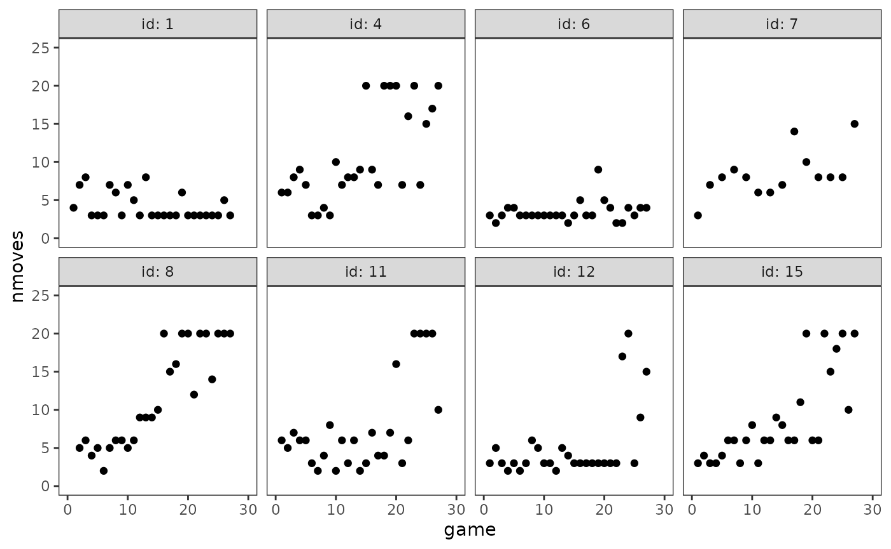
As Singer and Willett (2003) discuss, knowledge of the Fox n’ Geese game and inspection of these plots suggests a (generalized) logistic trajectory for the level-1 individual growth model consisting of three features:
- A fixed lower asymptote: Each child’s trajectory rises from a fixed lower asymptote of 1 because all players must make at least one move.
- A fixed upper asymptote: Each child’s trajectory approaches an upper asymptote because they can only make a finite number of moves before making a catastrophic error. Based on examining empirical growth plots, a fixed upper asymptote of 20 appears reasonable.
- A smooth curve joining the lower and upper asymptotes: Learning theory suggests that each child’s true trajectory will smoothly traverse the region between the lower and upper asymptotes—accelerating away from the lower asymptote as the child initially deduces the winning strategy, and decelerating toward the upper asymptote as the child finds it increasingly difficult to refine the winning strategy further.
We write this level-1 logistic trajectory as:
\[ \text{nmoves}_{ij} = a_{1} + \frac{(a_{2} - a_{1})}{1 + \pi_{0i} e^{-(\pi_{1i} \text{game}_{ij})}} + \epsilon_{ij}, \]
which asserts that \(\text{nmoves}_{ij}\)—the true value of
nmoves for the \(i\)th
child at the \(j\)th game—is a
nonlinear function of the logistic growth parameters \(\pi_{0i}\) and \(\pi_{1i}\). Here the parameters \(a_{1}\) and \(a_{2}\) represent the lower and upper
asymptotes, which we will fix to values of 1 and 20, respectively.
To develop an intuition for how this level-1 logistic trajectory
models the relationship between nmoves and
game, we can plot true trajectories for
different children using specific combinations of values for the
nonlinear parameters, \(\pi_{0i}\) and
\(\pi_{1i}\). We can do this by first
writing a function with deriv() representing the level-1
logistic trajectory (note that we will also use this function when
fitting the nonlinear multilevel model for change).
logistic_function <- deriv(
~ 1 + (19.0 / (1.0 + pi0 * exp(-pi1 * time))),
namevec = c("pi0", "pi1"),
function.arg = c("time", "pi0", "pi1")
)Then using the geom_function() geom to plot true
trajectories for different combinations of the nonlinear parameters.
# Figure 6.9:
ggplot() +
pmap(
arrange_all(crossing(.pi0 = c(150, 15, 1.5), .pi1 = c(.5, .3, .1)), desc),
\(.pi0, .pi1) {
geom_function(
aes(colour = pi1),
data = tibble(pi0 = factor(.pi0), pi1 = factor(.pi1)),
fun = \(.game) {
logistic_function(.game, pi0 = .pi0, pi1 = .pi1)
},
n = 30
)
}
) +
scale_x_continuous(limits = c(0, 30)) +
scale_color_brewer(palette = "Dark2") +
coord_cartesian(ylim = c(0, 25)) +
facet_wrap(vars(pi0), labeller = label_both) +
labs(
x = "game",
y = "nmoves"
)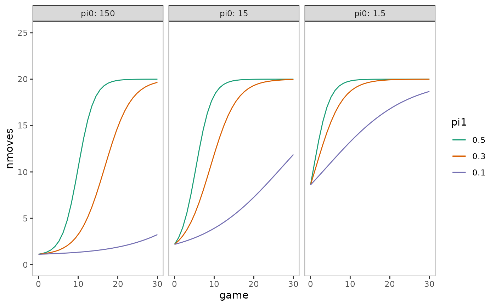
Here we will fit two models to the cognitive_growth data
using our postulated level-1 logistic trajectory: An unconditional
logistic growth model (Model A); and a logistic growth model that
includes a time-invariant predictor for children’s reading skill,
reading_score, centred on its sample mean of 1.95625 (Model
B).
Following Singer and Willett (2003), we specify the level-2 submodels for the nonlinear parameters of Models A and B as:
\[ \begin{align} \text{Model A:} \qquad \pi_{0i} &= \gamma_{00} + \zeta_{0i} \\ \pi_{1i} &= \gamma_{10} + \zeta_{1i} \\ \\ \text{Model B:} \qquad \pi_{0i} &= \gamma_{00} + \gamma_{01}(\text{reading_score}_i - \overline{\text{reading_score}}) + \zeta_{0i} \\ \pi_{1i} &= \gamma_{10} + \gamma_{11}(\text{reading_score}_i - \overline{\text{reading_score}}) + \zeta_{1i} \end{align} \]
where
\[ \begin{bmatrix} \zeta_{0i} \\ \zeta_{1i} \end{bmatrix} \sim \begin{pmatrix} N \begin{bmatrix} 0 \\ 0 \end{bmatrix}, \begin{bmatrix} \sigma^2_0 & \ \sigma_{10} \\ \ \sigma_{10} & \sigma^2_1 \end{bmatrix} \end{pmatrix}. \]
We can fit these logistic growth models using the nlme()
function from the nlme package. The model formula for
the nlme() function takes the form
response ~ nonlinear_formula, where the nonlinear formula
can either be represented using a function or written
directly. For this example we will use the
logistic_function() created above. There are several
important differences between linear and nonlinear models to keep in
mind when fitting these models:
- The nonlinear parameters must be declared explicitly in the
nonlinear formula. For the
nlme()function, linear models for these parameters are specified in thefixedandrandomarguments; if multiple parameters share the same model they can be written as a single formula instead of a list of single parameter formulas. - Starting estimates for the parameters must be provided, unless a self-starting function is used to calculate the initial parameter estimates; the final estimates can also be quite sensitive to the starting values. For this example, we chose starting estimates close to the parameter estimates reported in the text (Table 6.6). Strategies for choosing reasonable starting estimates are covered in Bates and Watts (1988), and Pinheiro and Bates (2000).
- An intercept is not assumed by default, and must be included in the nonlinear model formula if desired.
Note that although the models fit below match those described in the textbook equations, these models are not exactly the same as the those Singer and Willett (2003) secretly fit for Table 6.6 and Figure 6.10 (for discussion, see https://github.com/mccarthy-m-g/alda/issues/3).
# Fit models ------------------------------------------------------------------
cognitive_growth_fit_A <- nlme(
nmoves ~ logistic_function(game, pi0, pi1),
fixed = pi0 + pi1 ~ 1,
random = pi0 + pi1 ~ 1,
groups = ~ id,
start = list(fixed = c(pi0 = 13, pi0 = .12)),
data = cognitive_growth
)
cognitive_growth_fit_B <- update(
cognitive_growth_fit_A,
fixed = pi0 + pi1 ~ 1 + I(reading_score - 1.95625),
start = list(fixed = c(13, -.4, .12, .04))
)
cognitive_growth_fits <- list(
"Model A" = cognitive_growth_fit_A,
"Model B" = cognitive_growth_fit_B
)
# Make table ------------------------------------------------------------------
# broom.mixed and easystats don't have methods to extract random effects from
# objects of class nlme, so we have to construct this part of the table manually.
cognitive_growth_fits_ranef <- cognitive_growth_fits |>
map(
\(.fit) {
.fit |>
VarCorr() |>
as.data.frame(order = "cov.last") |>
mutate(
across(
c(var1, var2),
\(.x)
if_else(str_ends(.x, "[:digit:]"), paste0(.x, ".(Intercept)"), .x)
),
effect = "random",
var1 = case_when(
grp == "Residual" ~ "sd__Observation",
grp == "id" & is.na(var2) ~ paste0("sd__", var1),
grp == "id" & !is.na(var2) ~ paste0("cor__pi0", var1, ".", var2)
)
) |>
arrange(grp) |>
select(term = var1, estimate = sdcor)
}
) |>
list_rbind(names_to = "model") |>
pivot_wider(names_from = model, values_from = estimate) |>
structure(position = 5:8)
# Table 6.6, page 231:
cognitive_growth_fits |>
modelsummary(
statistic = NULL,
coef_map = c(
"pi0" = "pi0.(Intercept)",
"pi0.(Intercept)" = "pi0.(Intercept)",
"pi0.I(reading_score - 1.95625)" = "pi0.I(reading_score - 1.95625)",
"pi1" = "pi1.(Intercept)",
"pi1.(Intercept)" = "pi1.(Intercept)",
"pi1.I(reading_score - 1.95625)" = "pi1.I(reading_score - 1.95625)"
),
gof_map = tibble(
raw = c("deviance", "AIC", "BIC"),
clean = c("Deviance", "AIC", "BIC"),
fmt = 1
),
add_rows = cognitive_growth_fits_ranef,
output = "gt"
) |>
tab_row_group(label = "Goodness-of-Fit", rows = 9:11) |>
tab_row_group(label = "Variance Components", rows = 5:8) |>
tab_row_group(label = "Fixed Effects", rows = 1:4)| Model A | Model B | |
|---|---|---|
| Fixed Effects | ||
| pi0.(Intercept) | 10.776 | 15.456 |
| pi0.I(reading_score - 1.95625) | 8.741 | |
| pi1.(Intercept) | 0.109 | 0.125 |
| pi1.I(reading_score - 1.95625) | 0.051 | |
| Variance Components | ||
| sd__Observation | 3.699 | 3.717 |
| sd__pi0.(Intercept) | 5.167 | 4.043 |
| sd__pi1.(Intercept) | 0.071 | 0.069 |
| cor__pi0(Intercept).pi1.(Intercept) | 0.822 | 1.000 |
| Goodness-of-Fit | ||
| Deviance | 2485.6 | 2478.5 |
| AIC | 2497.6 | 2494.5 |
| BIC | 2522.2 | 2527.3 |
We can plot both individual and prototypical change trajectories as usual. First the prototypical trajectories.
prototypical_cognitive_growth <- cognitive_growth_fits |>
map2(
list(
tibble(game = seq(from = 0, to = 30, by = 0.1)),
crossing(game = seq(from = 0, to = 30, by = 0.1), reading_score = c(1, 4))
),
\(.fit, .df) {
.df |>
mutate(nmoves = predict(.fit, newdata = .df, level = 0))
}
) |>
list_rbind(names_to = "model") |>
mutate(reading_score = factor(reading_score, labels = c("low", "high")))
# Similar to Figure 6.10, page 232:
ggplot(prototypical_cognitive_growth, aes(x = game, y = nmoves)) +
geom_line(aes(colour = reading_score)) +
scale_color_viridis_d(
option = "G", begin = .4, end = .7, na.value = "black"
) +
coord_cartesian(ylim = c(0, 25)) +
facet_wrap(vars(model))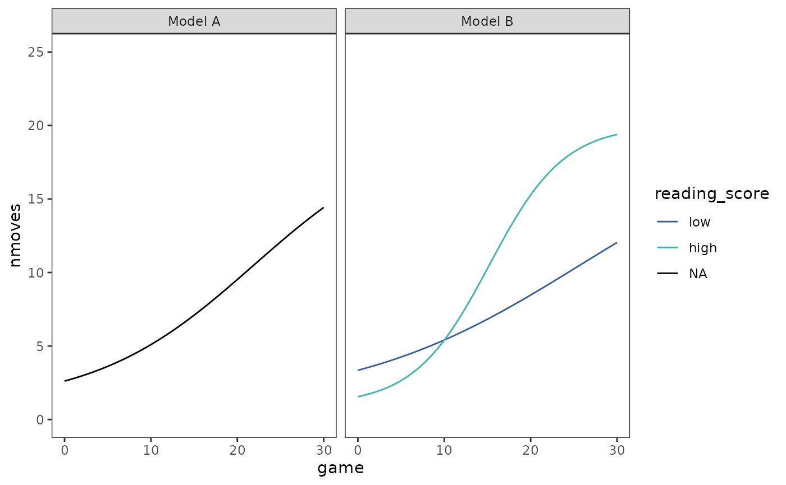
Finally, the individual trajectories. We can plot all the trajectories together to get a sense of interindividual variation.
cognitive_growth_fits |>
map(\(.fit) augment(.fit, data = cognitive_growth)) |>
list_rbind(names_to = "model") |>
select(-nmoves) |>
rename(nmoves = .fitted) |>
mutate(reading_score = if_else(model == "Model A", NA, reading_score)) |>
ggplot(aes(x = game, y = nmoves)) +
geom_line(aes(group = id, colour = reading_score)) +
scale_colour_viridis_b(
option = "G", begin = .4, end = .8, na.value = "black"
) +
coord_cartesian(ylim = c(0, 25)) +
facet_wrap(vars(model))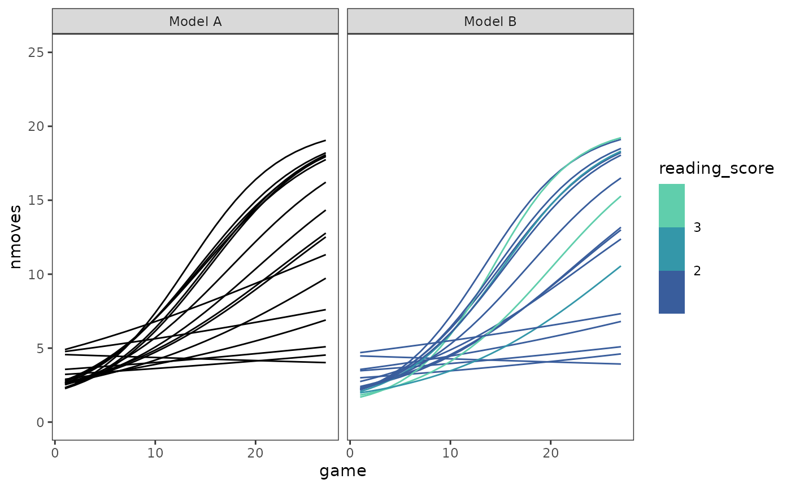
Or we can add each child’s fitted trajectory to their empirical growth plot to get a sense of how well the model fits the data.
cognitive_growth_empgrowth +
geom_line(
aes(y = .fitted, group = id, colour = reading_score),
data = filter(
augment(cognitive_growth_fit_B, data = cognitive_growth),
id %in% c(1, 4, 6, 7, 8, 11, 12, 15)
)
) +
scale_colour_viridis_b(breaks = 1:4, option = "G", begin = .4, end = .8)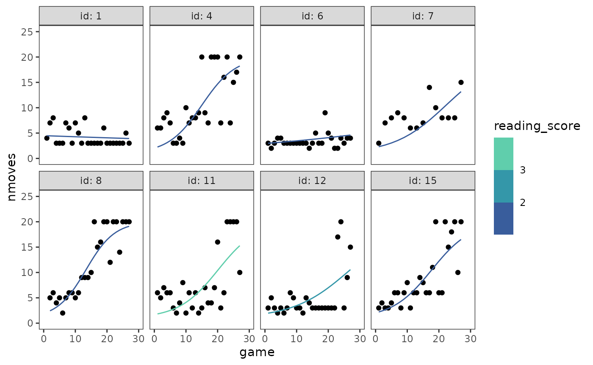